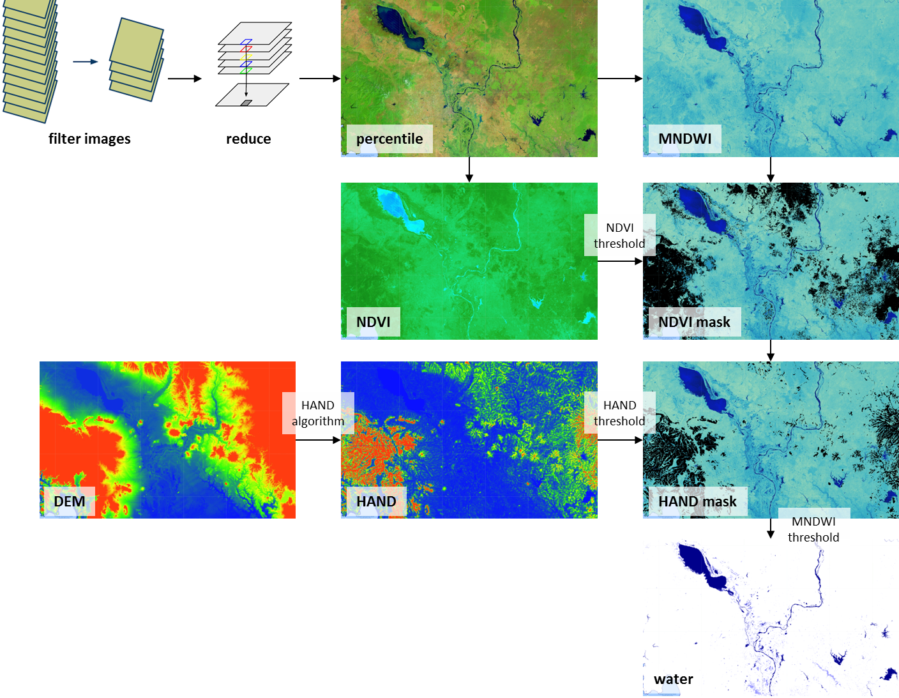

This page shows a few potential applications for which the Surface Water Mapping Tool could be used, by loading a pre-calculated map in the
tool. These maps only cover the area of interest of each specific example to keep storage and loading times to a minimum. The input parameters
are also updated to match those used to create the example map. If desired, the tool can then be used to replicate the map and extend it over
the entire SERVIR-Mekong area. More extensive explanations and examples can be found in the documentation (at the About page).
Click on one of the images below to load an example. If you want to reload the default map that is shown when the application first starts up,
click here.
The tool works by merging data from different Landsat satellite missions, providing a dataset that spans from the present day all the way back to 1984, which is also continously being updated. A stack of images is created for the time period selected by the user. From this stack of images two percentile maps are calculated, which represent two different situations. The higher percentile (with a default value of 40) represents the permanent situation; that which was present for the entire selected time period. The lower percentile (default value of 8) represents a temporary situation; that which was present only for a short time within the selected time period. From each percentile map a water index map is calculated, using the Modified Normalized Difference Water Index (MNDWI) [Xu, 2006]. This index combines several spectral bands from the Landsat satellites that are sensitive to the occurrence of water. A threshold value is then applied at the pixel level to classify water and non-water. Corrections are applied to improve results, reducing errors associated with falsely classified water over dark vegetation and (hill) shadows. Dark vegetation is masked out using the Normalized Difference Vegetation Index (NDVI) and hill shadows are masked out using a Height Above Nearest Drainage (HAND) map [Rennó et al., 2008], derived from the Multi-Error-Removed Improved-Terrain (MERIT) Digital Elevation Model (DEM) [Yamazaki et al., 2017]. The various steps of the tool are shown in the figure below.
The resulting water maps are loaded into the web application and displayed on top of the background map. The map calculated from the 40th percentile map represents permanent water (within the selected time period) and the map calculated from the 8th percentile map represents temporary water. Permanent water mostly represents reservoirs, lakes and rivers (that did not change a lot over the selected time period). Temporary water most often represents (seasonally) inundated land, such as wetlands, rice fields or fish ponds. It can also be an indication of floods or changes in water bodies.
The following layers can be visualized using the tool:
- background (white background that can be used to more clearly see other layers)
- HAND (pre-calculated Height Above Nearest Drainge map)
- water (the final result; permanent and temporary water)
Please note that, due to the statistical nature of this method, the maps are asynchronous in time, i.e. not each pixel is covered with water at the same time but these maps are an integration over the selected period.
Relevant links:
User Guide
Background and verification
GitHub
The development of the algorithm using Landsat 8 data was initiated in the PhD research of Gennadii Donchyts (co-funded by Deltares and the Technical University of Delft). Testing and further development of the algorithm using the Murray-Darling basin in Australia was funded by the EC FP7 project eartH2Observe (under grant agreement No 603608), which led to the publication of Donchyts et al. (2016), see below.
Application to the Mekong basin, which included testing, applying and adjusting thresholds, as well as further optimisation of the scripts to fully take advantage of Google Earth Engine capabilities, was supported by the SERVIR-Mekong project. This also included the addition of data from Landsat 4, 5 and 7. The development of the method to calculate the HAND dataset was fully supported by the eartH2Observe project, but the application for the Mekong, as well as refinement for this area, was supported by the SERVIR-Mekong project.
Landsat data is made freely available by the U.S. Geological Survey (USGS) and is both accessed and processed in Google Earth Engine.
The creation of the Google Appspot based online application was fully supported by the SERVIR-Mekong project.
Gennadii, D., Schellekens, J., Winsemius, H., Eisemann, E. & van de Giesen, N. (2016). A 30 m Resolution Surface Water Mask Including Estimation of Positional and Thematic Differences Using Landsat 8, SRTM and OpenStreetMap: A Case Study in the Murray-Darling Basin, Australia. Remote Sensing, 8(5), 386 .
Rennó, C. D., Nobre, A. D., Cuartas, L. A., Soares, J. V., Hodnett, M. G., Tomasella, J., & Waterloo, M. J. (2008). HAND, a new terrain descriptor using SRTM-DEM: Mapping terra-firme rainforest environments in Amazonia. Remote Sensing of Environment, 112(9), 3469-3481.
Xu, H. (2006). Modification of normalised difference water index (NDWI) to enhance open water features in remotely sensed imagery. International Journal of Remote Sensing, 27(14), 3025–3033. http://doi.org/10.1080/01431160600589179.
Yamazaki D., D. Ikeshima, R. Tawatari, T. Yamaguchi, F. O'Loughlin, J.C. Neal, C.C. Sampson, S. Kanae & P.D. Bates. (2017). A high accuracy map of global terrain elevations. Geophysical Research Letters, vol.44, pp.5844-5853. doi: 10.1002/2017GL072874.
Landsat images courtesy of the USGS: https://landsat.usgs.gov/
MERIT DEM: http://hydro.iis.u-tokyo.ac.jp/~yamadai/MERIT_DEM/
Enter or select a time period to perform a new calculation.
Check out the documentation to learn more about the tool.